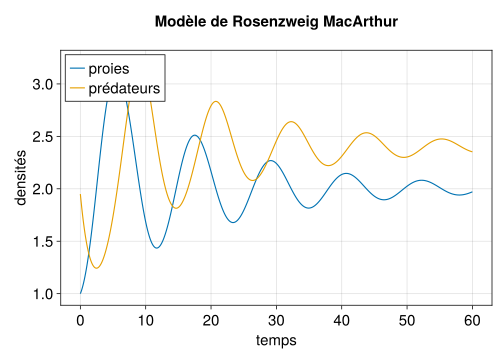

# ce code n'est pas exécuté dans cette cellule pour ne pas interférer
# avec le module que nous importons après
"""
some help regarding the module...
"""
module RmaMod
# import required packages, e.g.
using StaticArrays
# export what you want other programs to know when importing through `using`
export IniV, logistic
# put structs help and definition, e.g.:
"""
some help for IniV struct
"""
@kwdef struct IniV
x0::Float64 = 1.0
y0::Float64 = 1.95
u0::SVector{2, Float64} = SVector(x0, y0)
end
# put functions help and definition, e.g.:
"""
some help for logistic function
"""
function logistic(x::Real, p::ParRma)
(; r, K) = p # deconstruct/get r and K from p
return r*x*(1-x/K)
end
endMon premier module
Module RmaMod.jl
Nous exploitons le code produit pour simuler de façon efficace le modèle de Rosenzweig MacArthur (cf. cette page) pour générer un module (essentiellement un ensemble d’objets et de fonctions qui peuvent être utilisés par d’autres programmes).
Une fois le code entièrement sous forme de struct et de function, la création du module est très simple. On place le module dans un fichier RmaMod.jl avec l’architecture suivante :
Le vrai fichier RmaMod.jl définissant le module RmaMod est disponible ici.
Utilisation du module
Pour utiliser le module contenu dans le fichier RmaMod.jl, nous incluons ce fichier (il est dans le répertoire ./src/ ici) et l’importons avec using :
include("./src/RmaMod.jl")
using .RmaModLe module exporte:
- les
structs:IniV(conditions initiales),ParRma(paramètres du modèle),ParTime(paramètres de temps), - les fonctions :
plot_rma()etplot_bif_rma(),
comme nous le confirme l’aide du module (dans la mesure ou elle est bien renseignée).
@doc RmaModThe module RmaMod provides structs and functions to simulate and plot the dynamics and bifurcation diagram of the Rosenzweig MacArthur model.
Exported structs are:
Inivinitial condition objectsParRmamodel parameters objectsParTimetime parameters objects
Exported functions are:
plot_rma()to simulate and plot the RMA dynamics against timeplot_bif_rma()to simulate and plot the RMA bifurcation diagram against K
On peut obtenir de l’aide sur ces fonctions (si le module a bien rempli ses docstrings):
@doc plot_rmaplot_rma(iniv, p, pt)simulates and plots predator x and prey y density dynamics against time, given model parameters p and time parameters pt. returns a CairoMakie figure object.
arguments:
inivis anIniVinitial value object (defined in this module)pis aParRmaparameter object (defined in this module)ptis aParTimetime parameter object (defined in this module)
Simulation des dynamiques
Nous pouvons simuler les dynamiques du modèle en appelant les constructeurs par défaut des objets à la volée :
plot_rma(IniV(), ParRma(), ParTime())
Mais aussi en spécifiant certains objets, comme e.g. les paramètres :
plot_rma(IniV(), ParRma(K = 5.0), ParTime())
Diagramme de bifurcations
De la même manière, on peut générer un diagramme de bifurcations :
plot_bif_rma(ParRma())